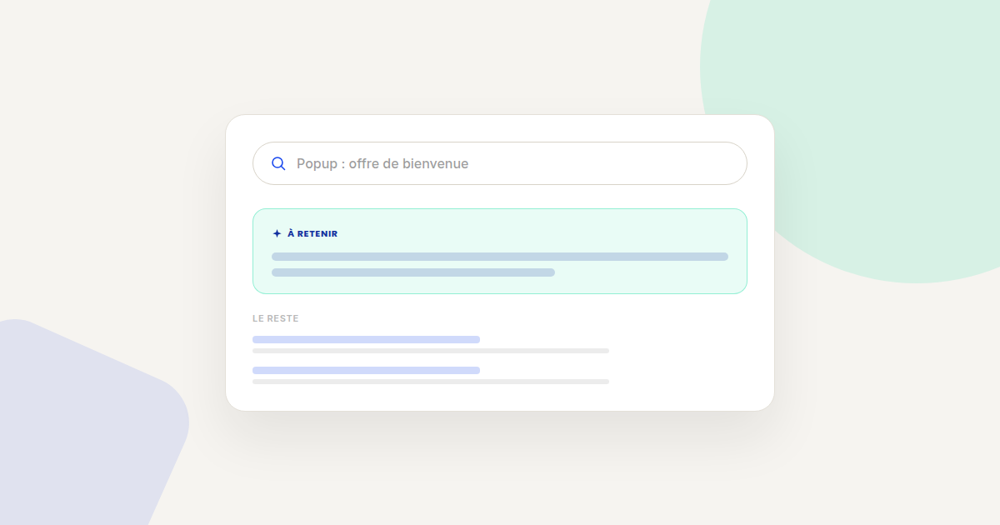
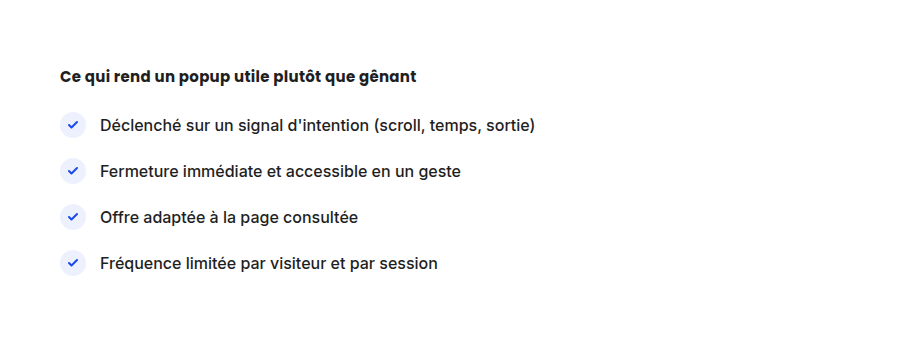

Popups et exit-intent : les 5 erreurs qui les rendent contre-productifs
Les popups ont mauvaise réputation — souvent à juste titre, tant ils sont mal réglés sur la plupart des sites que j'audite. Le problème n'est presque jamais l'outil, c'est le paramétrage. Voici les cinq erreurs qui reviennent le plus souvent, et comment les corriger.

Un popup bien réglé peut convertir plusieurs points de pourcentage de visiteurs qui, sans lui, seraient repartis sans laisser d'email ni de coordonnées. Un popup mal réglé produit l'effet inverse : il agace, il fait fuir, et il dégrade la perception de la marque avant même que le visiteur ait eu le temps de la découvrir. Voici les cinq erreurs qui font basculer d'un côté ou de l'autre.
Erreur n°1 — Le déclenchement trop précoce
Un popup qui s'affiche dans les 3 à 5 premières secondes de visite interrompt un visiteur qui n'a même pas encore compris où il se trouve. Le signal envoyé n'est pas « voici une offre intéressante », c'est « ce site privilégie ses propres objectifs aux vôtres ». La correction : déclenchez sur un signal d'engagement réel — un pourcentage de scroll, un temps passé minimum, ou une intention de sortie détectée par le mouvement de la souris vers la barre d'adresse.
Erreur n°2 — L'absence de fermeture claire et accessible
Une croix minuscule, mal contrastée, ou un popup qui ne se ferme pas au clavier avec la touche Échap ne respecte ni l'expérience utilisateur ni les standards d'accessibilité de base. La correction : une zone de fermeture suffisamment grande, contrastée, et une fermeture possible au clic en dehors du popup comme au clavier.
Erreur n°3 — La même offre pour tous les visiteurs
Un visiteur qui arrive sur une page de blog et un visiteur qui consulte une fiche produit n'ont pas la même intention — leur proposer le même popup générique (« -10 % sur votre première commande ») ignore ce contexte. La correction : adaptez l'offre ou le message au type de page consultée, même avec une segmentation simple (blog vs catalogue, nouveau visiteur vs visiteur récurrent).

Erreur n°4 — Généraliser sans avoir testé
Déployer un popup sur 100 % du trafic sans avoir mesuré son effet réel sur le taux de conversion global — pas seulement sur le taux de captation d'email — revient à parier que l'effet positif (plus de leads captés) dépasse l'effet négatif (plus de visiteurs agacés qui repartent). La correction : testez sur une portion du trafic, en mesurant le taux de conversion final, pas uniquement le taux d'inscription au popup.
Erreur n°5 — Ne jamais retirer le popup après une conversion
Un visiteur qui vient de s'inscrire à la newsletter, ou qui vient d'acheter, qui revoit le même popup à sa prochaine visite reçoit un signal clair : le site ne sait pas qui il est. La correction : supprimez ou adaptez l'affichage du popup une fois l'action visée réalisée, via un cookie ou un identifiant de session.
FAQ
Les popups nuisent-ils au référencement Google ?
Google pénalise les interstitiels intrusifs qui bloquent le contenu principal sur mobile juste après l'arrivée sur la page. Un popup bien temporisé et facilement fermable n'est pas concerné par cette pénalité.
Faut-il abandonner les exit-intent sur mobile ?
La détection du mouvement de souris ne fonctionne pas sur mobile. Un déclenchement basé sur le scroll ou le temps passé reste efficace et adapté à ce contexte.
Combien de temps attendre avant de réafficher un popup à un visiteur qui l'a fermé ?
Il n'y a pas de règle universelle, mais espacer d'au moins plusieurs jours évite l'effet de lassitude qui pousse à fermer le popup sans même le lire.
Vos popups convertissent moins qu'ils ne font fuir ?
Pour aller plus loin, voir la page CRO, et la page Optimisation landing page.
Pour continuer sur ce sujet.